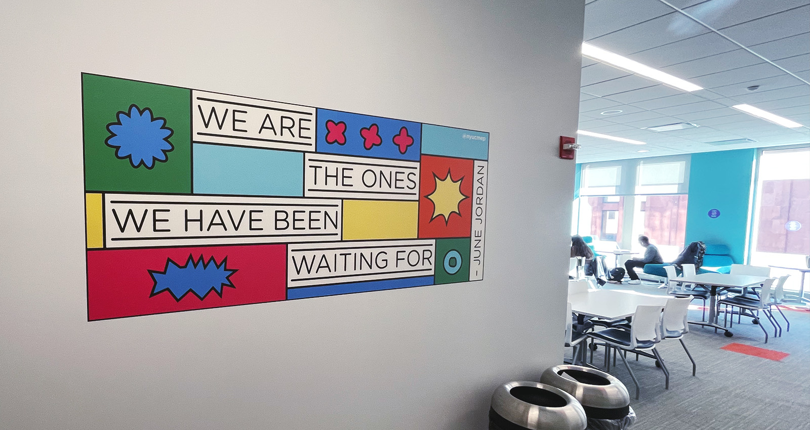
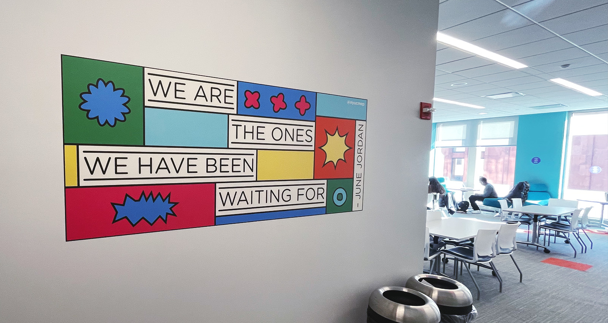

CMEP Calendar
September 2022
Lead Designer
Poster & Layout Design
This was a project for The Center of Multicultural Education and Programs at NYU
Each semester, the Center for Multicultural Education and Programs (CMEP) distributes a calendar to keep the NYU community informed of major events and programs. Each calendar also features a quote that represents the semester, with the Fall Semester of 2022 highlighting the June Jordan quote, 'We are the ones we have been waiting for.' The design not only serves as an informative tool but also features the quote on the reverse side, transforming the calendar into a poster and adding an aesthetic dimension.
Given the diverse and expansive community at NYU, accessibility is a key consideration in the design of the calendar. All text is set to a minimum of 14pt to ensure readability. Additionally, a QR code on the calendar links to a digital version, where the events can be accessed and read aloud using text-to-speech technology.
In addition to the Calendar, the poster side was reformatted into small sticker for distribution and a large wall vinyl to be hung in the CMEP student lounge.
 
